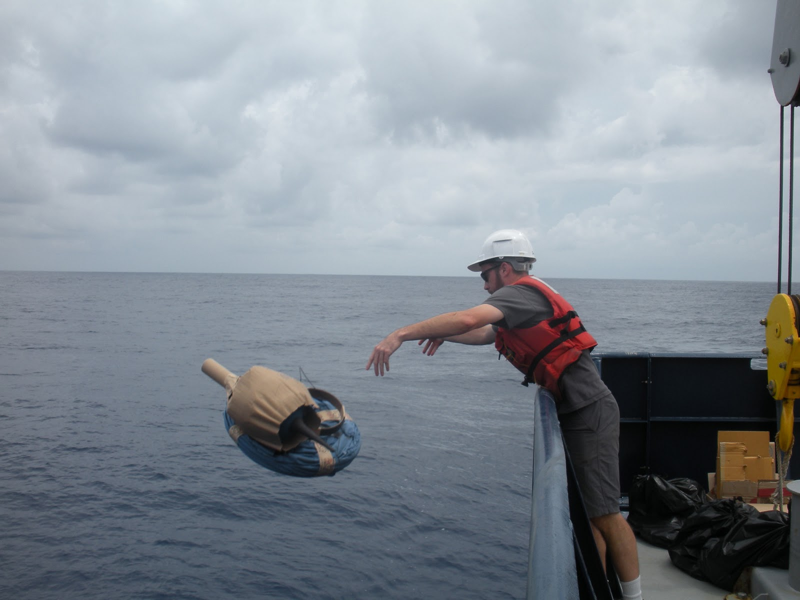
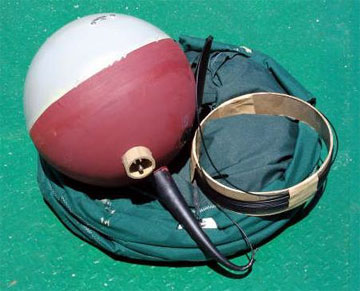
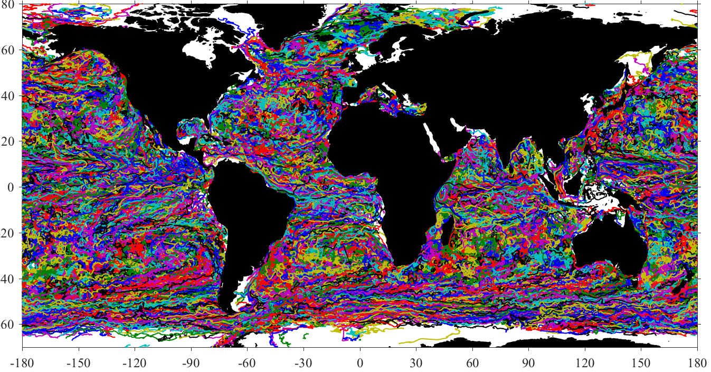
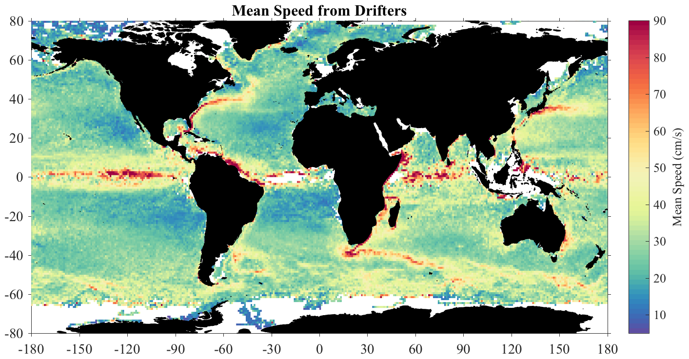
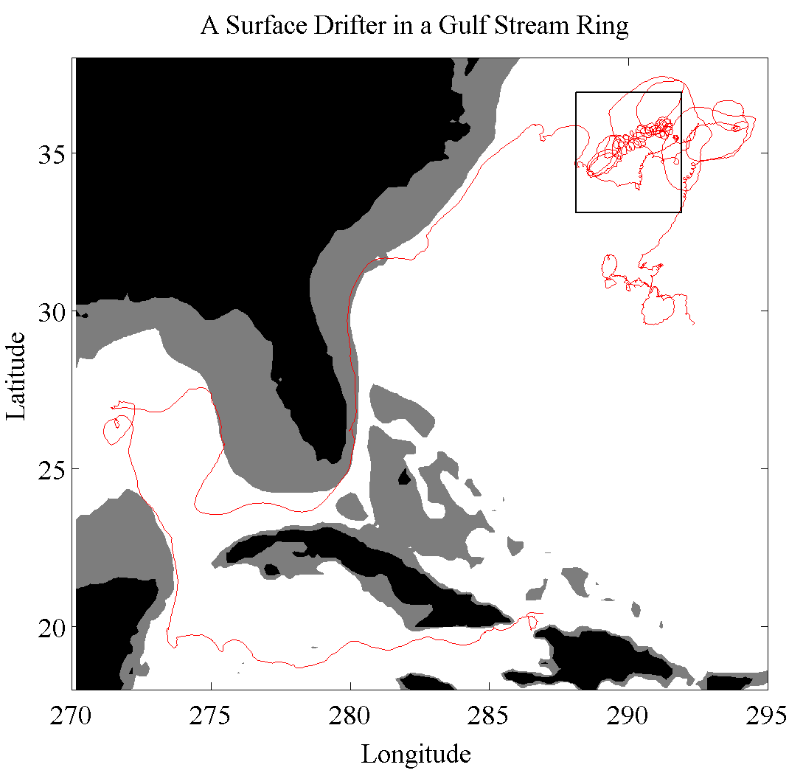
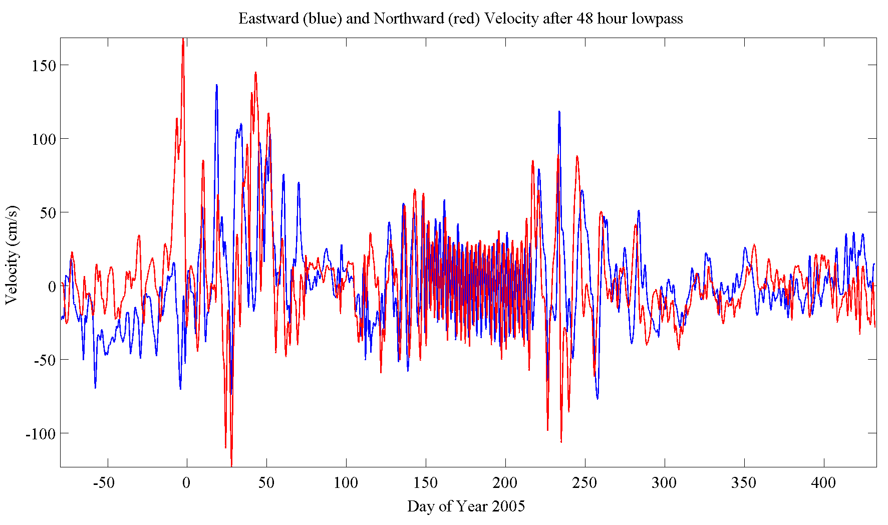
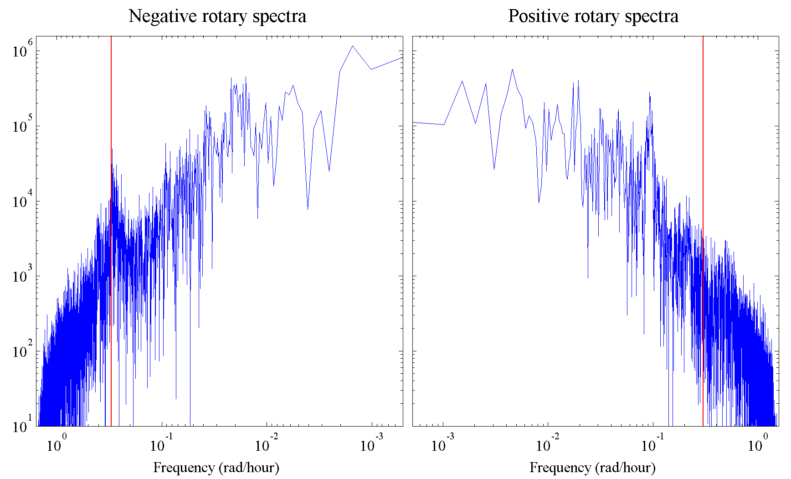
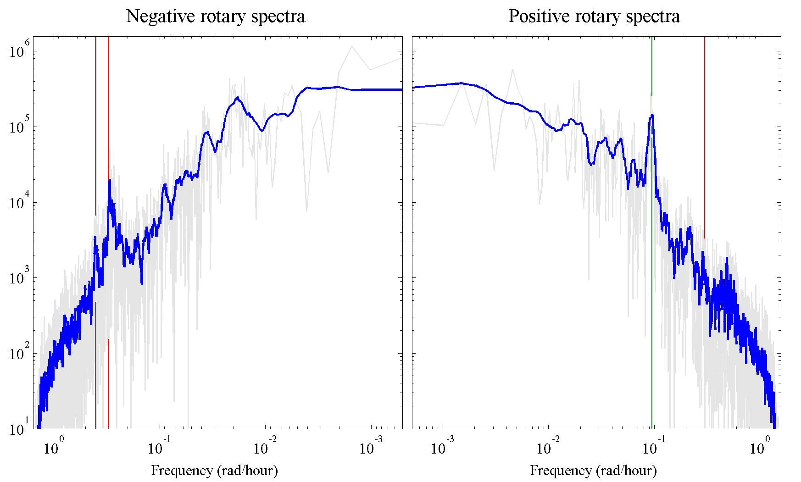
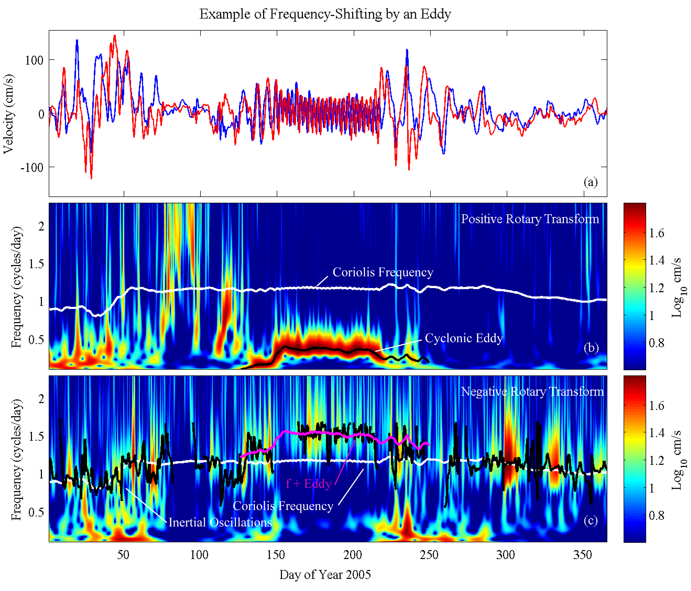
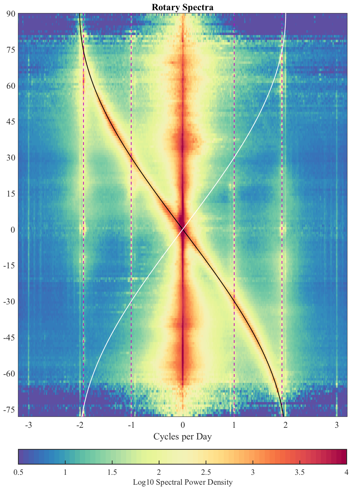

name: motivation class: center,middle, .toc[[✧](../index.html)] .title[Motivation] --- class: center, .toc[[✧](../index.html)] #A View of the Ocean <video preload="auto" width="95%" height="auto" data-setup="{}" autoplay loop controls><source src="../videos/goldmovie.mp4" type="video/mp4" /></video> From a high-resolution numerical model of the ocean currents by Harper Simmons. Color is a normalized measure of current speed. --- class: center, .toc[[✧](../index.html)] #Studying the Currents  --- class: center, .toc[[✧](../index.html)] #Surface Drifter Basics .left-column[<img style="width:100%;" src="../figures/drifterschematic.gif">] .right-column[ A basketball-sized surface float with a 6 m long drogue centered at 15 m depth. Position communicated by satellite roughly every hour.] --- class: center, .toc[[✧](../index.html)] #The Surface Drifter Dataset <video preload="auto" width="95%" height="auto" data-setup="{}" autoplay loop controls><source src="../videos/driftermovie.mp4" type="video/mp4" /></video> Animation of the entire surface drifter dataset. Color = Speed. --- class: center, .toc[[✧](../index.html)] #A Drifter “Spaghetti Plot”  Trajectories from NOAA's Global Drifter Program 30 million data points, 20 thousand time series (That's big for oceanography!) --- class: center, .toc[[✧](../index.html)] #Mean Current Speed  Formed by binning in latitude and longitude, then averaging. Easy to compute maps of low-order statistics: mean, variance, etc. Clearly does not capture full richness of dataset. What else can be done? --- class: left, .toc[[✧](../index.html)] #Time Series Analysis Extracting information from time series, like the drifter trajectories, is the domain of *time series analysis*, or *signal processing*. The goal of time series analysis is (i) to extract as much useful information as possible from the data, while at the same time, (ii) avoiding mis-interpretation of artifacts and spurious features. Time series analysis has much overlap with statistics. For example, statistical methods are often used to test hypotheses that can be framed using time series analysis. --- class: left, .toc[[✧](../index.html)] #Motivation and Overview We will look at three different techniques for time series analysis: 1. Fourier spectral analysis 2. Time-frequency analysis using wavelets 3. Stochastic modeling These methods address the information in the drifter trajectories in different ways, and are suitable for different physical phenomena. Three particular phenomena of interest are *ocean vortex structures*, *large-scale diffusivity*, and *wind-forced oscillations*. --- class: center, .toc[[✧](../index.html)] #An Oceanic Vortex <video preload="auto" width="100%" height="auto" data-setup="{}" autoplay loop controls><source src="../videos/nonlineareddyparticlemovie.mp4" type="video/mp4" /></video> A simulation of an oceanic vortex (or “eddy”) by Jeffrey Early. Domain size is 2000×1000 km. Color is initial longitude. --- class: center, .toc[[✧](../index.html)] #Sample Drifter Trajectory  Black = continents, gray = continental shelves (500 m depth). Red line is the trajectory of one single instrument. --- class: center, .toc[[✧](../index.html)] #The First Tool: Your Eyes  This is the velocity corresponding to the previous trajectory. Blue = east/west velocity, Red = north/south velocity. --- class: center, .toc[[✧](../index.html)] #A Naive Spectral Estimate  A decomposition into negatively and positively rotating circles. “Naive” means it is what you use if you don't know better. --- class: center, .toc[[✧](../index.html)] #A Better Spectral Estimate  Features of the spectrum are now readily apparent. This uses Thomson's (1982) multitaper method, the best general method. --- class: center, .toc[[✧](../index.html)] #A Wavelet Transform  Here we decompose the variability across time *and* frequency. The time information reveals critical links between the phenomena. --- class: center #Drifter Spectra  Spectral density of surface drifter velocities. Tides are vertical lines. The energetic curve is due to wind-forced *inertial oscillations.* --- class: center, .toc[[✧](../index.html)] #Ocean Turbulence <video preload="auto" width="60%" height="auto" data-setup="{}" autoplay loop controls><source src="../videos/turbulencemovie.mp4" type="video/mp4" /></video> An idealized model of oceanic turbulence by Jeffrey Early. Shading is speed with particle trajectories shown in color. --- class: center, .toc[[✧](../index.html)] #Vortex-Driven Diffusivity <video preload="auto" width="100%" height="auto" data-setup="{}" autoplay loop controls><source src="../videos/dispersionmovie.mp4" type="video/mp4" /></video> Trajectories from the numerical model (left) versus realizations of a three-parameter stochastic model (right). --- class: left, .toc[[✧](../index.html)] #Summary The rich structure present in surface drifter trajectories motivates the development of new time series analysis tools. The tools we use to analyze data matter. Better, or more suitable, tools let us extract more information from available data. Next we will turn our attention to fundamentals of time series analysis, before continuing on to discuss novel methodologies.